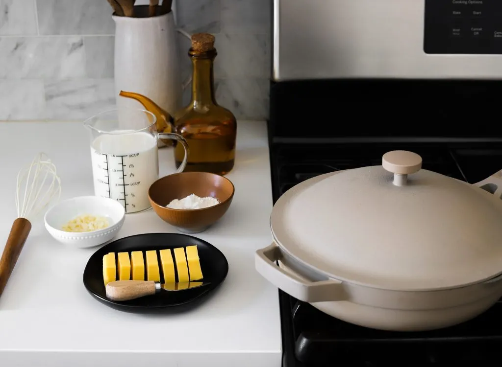

Macaroni and cheese is the ultimate comfort food and the best side on the dinner table! It’s so ooey and goeey on the inside and then perfectly golden and crispy on the outside – it’s the best of both worlds. After one bite of this, you'll understand why you truly never need any other Mac & Cheese Recipe!
jump to recipeThere’s nothing quite like the joy of digging into a plate of baked mac and cheese with its creamy, rich sauce, perfectly tender pasta, and that golden, bubbly layer of melted cheese on top. It’s comfort food in its purest form, ideal for cozy dinners, potlucks, or when you just need something indulgent. This recipe has everything you love about classic mac and cheese but with a few tricks to take it to the next level. Let’s get into all the tips, variations, and secrets to making this dish a standout!
Let’s start with the pasta. Bring a big pot of salted water to a rolling boil. Remember, you want the water salty like the sea to infuse the pasta with flavor from the inside out. Large elbow macaroni is my go-to for that classic look and bite, but feel free to get creative! Here are a few other pasta shapes that work great:
Regardless of which shape you choose, cook it at al dente or a minute under since it’ll continue to cook in the oven. This way, it won’t end up overcooked and mushy. Once your pasta is ready, drain it thoroughly but don’t rinse it. The starch left on the pasta will help the sauce cling better!
Now, let’s talk about the magic that is the cheese sauce. Start by melting unsalted butter in a large saucepan over medium heat. Once melted, whisk in just enough flour to create a roux. This is what will thicken your sauce and give it that luxurious texture. Let it cook for a couple of minutes until it’s golden and smells a little nutty.
Here’s a tip: whisk in minced garlic after your roux has cooked to infuse it with flavor before adding the liquid. You can also saute the garlic in the butter before adding the flour if that’s easier for you. Slowly pour in warm heavy cream while whisking continuously to avoid lumps. TRUST ME, using warm cream instead of cold makes all the difference — it helps the sauce stay smooth and prevents it from breaking.
Once the cream is incorporated, mix in softened cream cheese for that extra creamy texture. Then, season it up with a mix of dry mustard powder, smoked paprika, a hint of nutmeg, and a dash of cayenne for a subtle kick. These spices elevate the flavor profile without overpowering it. Season with salt and pepper to taste. DON’T go too crazy with the salt though because keep in mind, the cheese will melt in and naturally salt the sauce. You can always add more salt later at the end after tasting.
Here’s the fun part: cheese! I love using a blend of sharp cheddar, Colby jack, and smoked gouda, but there are so many delicious options out there:
Bold, Flavorful Cheeses: These cheeses pack more of a punch and add depth to your mac and cheese:
Tip: Always grate your own cheese instead of using pre-shredded. Pre-shredded cheese is coated with anti-caking agents that prevent it from melting smoothly. Grating your own cheese not only melts better but also has a fresher taste. It might take a few extra minutes, but it’s totally worth it for that silky, smooth sauce.
To finish the sauce, reduce the heat to low and gradually stir in the shredded cheeses. Keep stirring until everything is completely melted and velvety smooth. At this point, taste and adjust any seasonings to your liking.